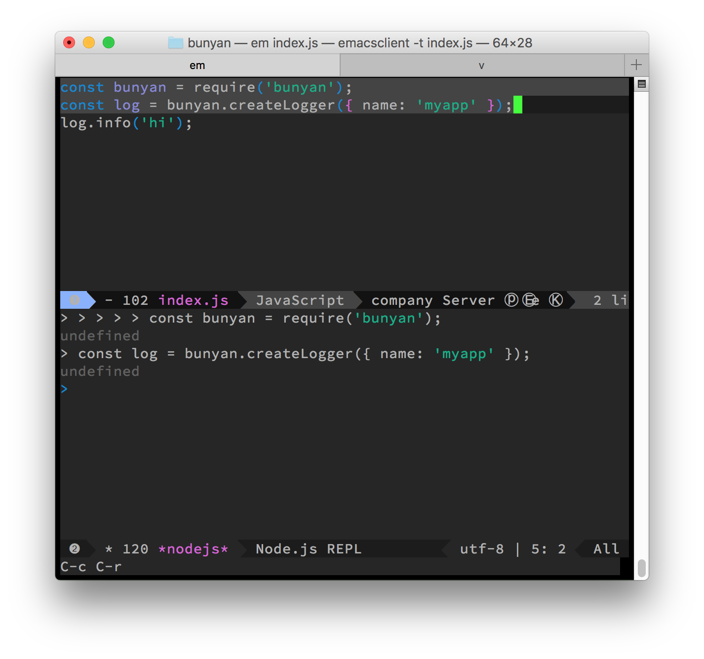

在调试代码时，往往会开两个窗口进行操作，一个用来编写代码（代码文件如 index.js），另一个用来调试（如运行 node index.js），这样会频繁的在编辑器和调试窗口之间切换；而且使用 node cli 会运行整个文件，而往往我们只想看文件中的部分内容。
nodejs-repl 库相当于在编辑器和 repl 之间做了桥接，类似于 tmux。
这里有两条命令比较重要：
1 | nodejs-repl-send-region ;; 用于将选中的区域发送至 repl 中，但不求值，在引入库时比较有用 |
具体步骤：
一、配置
-
在
~/.spacemacsdotspacemacs-additional-packages '(nodejs-repl)中添加nodejs-repl -
在
dotspacemacs/user-config ()中添加快捷键
1 | (add-hook 'js-mode-hook |
- 运行
M-m f e R，安装 nodejs-repl
二、调试
- 使用 emacs 打开待调试文件；使用
M-x运行命令nodejs-repl，便会在编辑窗口相同 frame 里打开 nodejs 的 repl：

- 选中文中的第三方库，使用
nodejs-repl-send-region命令将其引入 repl 中。（注意，不能使用nodejs-repl-send-last-sexp！）

- 对于需要调试的代码行，运行
nodejs-repl-send-last-sexp，便会将代码加入 repl 中，并进行运算：

三、TODO
- 快捷键配置在 js2-mode 中只能部分起作用，js-mode 中都可以。需要研究一下 emacs 快捷键配置和优先级。